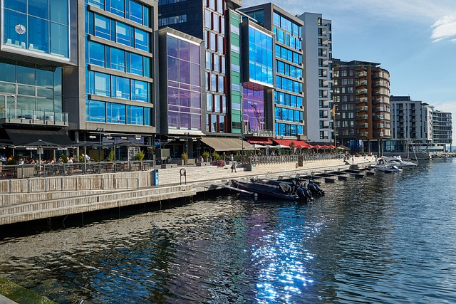
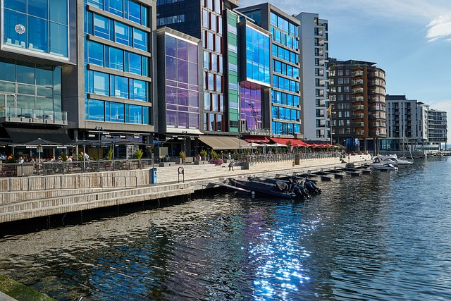

Smart City Initiatives and Ethical Dilemmas
Smart city initiatives involve urban development projects that integrate advanced technology, data analytics, and connectivity to improve city efficiency, sustainability, and quality of life. This article explores a hypothetical proposal by Sidewalk Labs to create a smart city neighborhood in Grønlikaia, Oslo, demonstrating the intersection of technology and urban development. The proposal aligns with global sustainable urban development trends by using IoT software to reduce energy consumption and enhance environmental sustainability. However, it requires residents to share personal data, raising ethical concerns about data privacy and potential surveillance. The impact of the proposal on society is complex, offering benefits like improved public services and transportation, but also posing challenges related to data privacy and cyber vulnerabilities. Residents who agree to share personal data may find themselves under constant surveillance, leading to concerns about data misuse, abuse, or unauthorized access. About Smart cities
Potential losers are those who value their privacy and may choose not to participate in the smart city. Meanwhile, those comfortable with technology may benefit from the efficiency and convenience of smart city features. Economically, the development can stimulate economic growth, creating jobs and business opportunities. However, there are risks of system failures and cyberattacks, potentially disrupting essential services. In summary, this proposal highlights the need for careful planning, robust data protection measures, and inclusivity to balance the potential benefits and challenges of smart city initiatives. Striking the right balance between innovation and security, addressing ethical concerns, and bridging the digital divide are essential for creating a smart city that genuinely enhances the community's overall well-being. Digital Cities